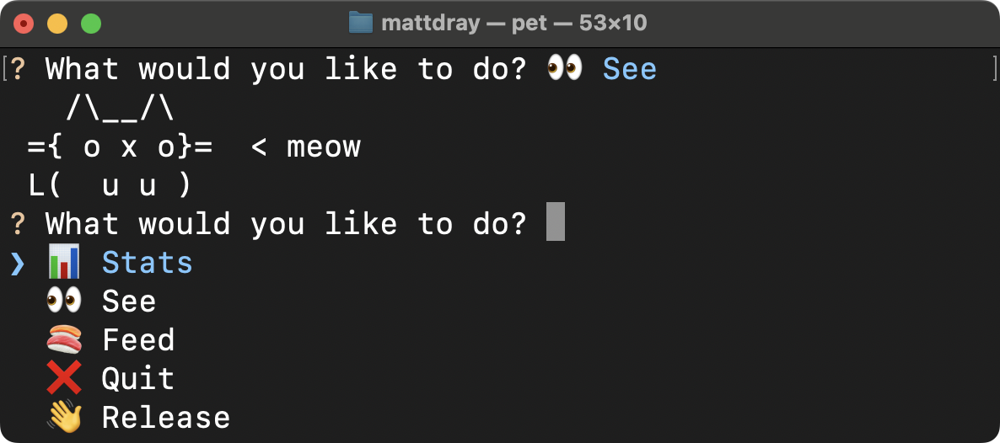
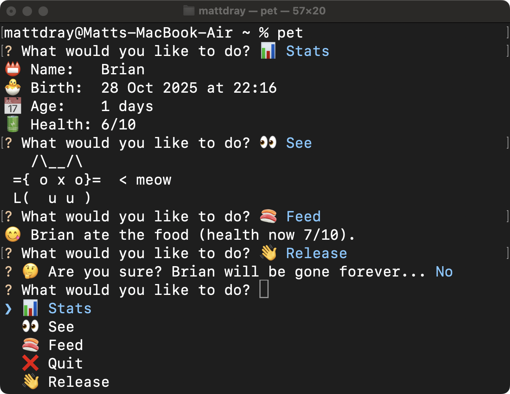

[project]
name = "2025-10-30-pet"
version = "0.1.0"
requires-python = ">=3.12"
dependencies = []
tl;dr
I’ve made pet: a (very simple) Python tool to look after a persistent cyberpet on your command line.
Adopt
I made this for learning purposes, but if you did want to try it:
- Install uv if you somehow haven’t already.
- From your terminal run
uv tool install git+https://github.com/matt-dray/pet.git. - Run
pet. - Take responsibility.
Pet the kitty
Running pet takes control of the terminal and asks you to select an option with ↓, ↑ and Enter:
- 📊 Stats to show your pet’s name (supplied by the user when they first run pet), birth (creation datetime), age (days since birth) and health (out of 10)
- 👀 See to print a little picture of your pet (always the same handsome cat)
- 🍣 Feed to simulate your pet eating and gaining one unit of health
- ❌ Quit to exit the program back to the terminal
- 👋 Release to discard your pet (cry) and delete its data
Here’s what a playthrough looks like:

Lines starting with a question mark require input from the user. Once selected, the options disappear and the chosen one is displayed in blue. When the user can choose from several options, a blue chevron is moved between the options.
Crucially, if you quit and come back later, your pet will be recalled and its stats will have changed given the amount of time that’s passed. Pay attention! Your pet’s health will diminish over time1.
That’s it.
The soft underbelly
You can see the ‘game loop’ in the cli.py module. Basically:
- If it doesn’t exist, create a json file of pet stats on the user’s computer, having prompted for the pet’s name.
- Update the stats given the time elapsed since birth and since your last interaction.
- Deplete the pet’s health as a function of elapsed time (1 health unit lost per hour).
- Ask the user to select an action from the menu and act accordingly, ad infinitum.
- Break the loop on exit, and delete the stats json file if the pet was released.
Not too complicated. Behind this, the Python functions in utils.py are for wrangling and overwriting the stats file, calculating time and health loss, and for initiating the graphics engine (i.e. print(), lol).
Gaining XP
As well as getting more general experience in Python packaging, I learnt more about:
- InquirerPy, which does the heavy lifting on user interaction, like
inquirer.select()for presenting keyboard-navigable options2 user_data_dir()from platformdirs, which can create a platform-independent path to a location on the user’s machine where game data can be stored
As in several recent posts, uv has also been great here for the development loop, including to support use of ruff and ty3 for code quality, like uvx ruff format.
A good egg
This pet tool has been designed for my own learning. There’s loads of missing features, but my goals have been met.
For more of a triple-A4 virtual pet experience, you can read earlier blogs about my {tamRgo} package, which does a much better job of this in the R console. It has lots more features, like ‘happy’, ‘hungry’ and ‘dirty’ meters; different pet species; experience points and levelling up; and ‘graphics’ dependent on the pet’s species and level. Ah, and the concept of death.
Environment
Session info
Footnotes
Reuse
CC BY-NC-SA 4.0